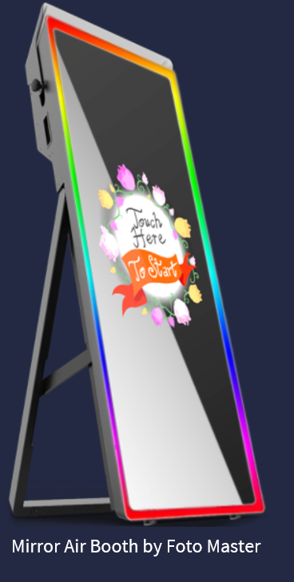

Project Overview

Topic
Assist in Reflection is a project that aims to use an interactive mirror technology called “Magic Mirror” to fill a niche gap in technological assistance for elderly people, or those that are not mobile due to illnesses or disabilities. The mirror will mainly be used in areas that provide a hazard like slipping on a wet, tiled floor and can potentially be installed anywhere else there is a mirror. Through the use of several different modules, Assist in Reflection strives to provide safety and practical use in the areas of medicine tracking, fall detection and a bathroom checklist while also providing quality of life features that include noise detection and a voice assistant like Alexa or Google Assistant. Medicine tracking, fall detection and noise detection are modules that can provide an easy way for caregivers and families to monitor and track their loved ones movements, whereas bathroom checklist and voice assistant are for use by the customer to increase the ease of their experience. Assist in Reflection is built using cheap, non-invasive sensors that can provide these services for the elderly and disabled.
The outcome of this project is an easy to use device that can be installed in any mirror and programmed for customization based on the customer’s need, while providing safety and monitoring for caregivers. Another outcome will be valuable skills developed by our group through the completion of this project, increasing our knowledge of Raspberry Pi computer systems, HTML/CSS programming and learning to contribute to an actual Information Technology project through websites that are commonly used by professionals in the IT world, such as GitHub and Microsoft Teams. By using the most up to date hardware and custom built software, Assist in Reflection aims to enhance the users lifestyle and through its different modules.
Motivation
The motivation for this product is to build a product that doubles as an interactive mirror that can help out and perform in some of the ways a smartphone can, except in places that a mirror would be more accessible, a bathroom for instance. This project is interesting as it takes a normal, everyday item (a mirror) and can turn it into a bigger, more interactive version of smartphones aimed at the use of those that may not always have access to a smartphone, and is just as easy to use. Assist in Reflection would be classified as another piece in the Internet of Things, which has been forecast to increase in market size from $US418 billion in 2021 to $US 1.56 trillion in 2025 (Statista), fitting in with one of the fastest growing IT trends. For our group to work on this project it would show to an employer that we can design a product and fill a niche within the market of IoT’s, express creativity within the custom made modules, and allow us to show off our technical skills while working as a group, which would be required in many IT workplaces.
Landscape
Some similar products that are already available include the Smart Mirror made by Embrace and Mirror Air Booth by Foto Master, with each of these products having their own differences and advantages compared to Assist in Reflection. The Mirror Air Booth by Foto Master is an entertainment device mainly designed around taking photos and editing them through the interactive display. It is usually rented out at a fee for its use at events, and is purely for fun and entertainment. Features included within the Mirror Air Booth are augmented reality with the ability to insert “Virtual Selfie Partners”, background replacement of photos, photo filters similar to the likes of Instagram and Snap Chat filters and on glass browsing of the photo gallery. This product is incredibly different to Assist in Reflection as the majority of its features are only focused on taking photos and editing them in an entertaining, interactive way, whereas our product is to perform a practical purpose and help those that are no longer as agile or mobile. The Smart Mirror by Embrace has more similarities to our product, as it can be bought and installed wherever in the owner’s house. The Smart Mirror has Google Assistant voice integration, is Android powered, motion sensor activation and Bluetooth connection. This system is more of a lifestyle device, only accessible to those that can afford it and offers no safety for those that may trip or fall like the elderly. Our product aims to provide many of the included services with Embrace’s Smart Mirror, but with its focus on monitoring and tracking the movements of its owners for their safety.